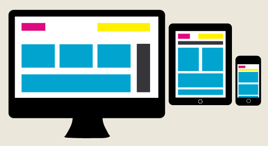
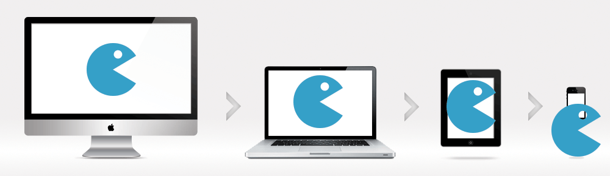
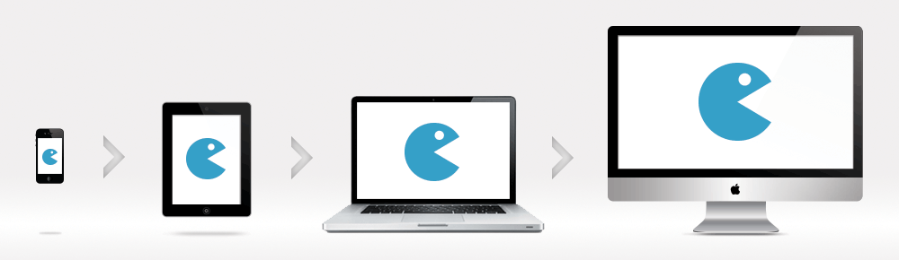

Responsive Design
Ngày nay, do sự phát triển chóng mặt của các smartphone và tablet, nên ta cần phải làm sao cho website hiển thị tốt trên mọi thiết bị có kích thước khác nhau, bên cạnh đó cũng có nhiều người dùng không bao giờ maximize trình duyệt của họ. Để đáp ứng được nhu cầu đó hiện tại theo tôi biết thì người ta có 2 cách làm:
- Một là người lập trình sẽ viết code nhận diện thiết bị người dùng đang sử dụng, rồi sẽ đưa họ đến trang được thiết kế dành riêng cho thiết bị của họ.
- Hai là sử dụng responsive design, responsive là kiểu giao diện co giãn theo kích thước của cửa sổ trình duyệt, cũng là xu hướng thiết kế web của năm nay.
Nói nôm na là vậy, các bạn xem vài hình ảnh sẽ dễ hiểu:
Hôm nay tôi sẽ hướng dẫn các bạn làm thiết kế 1 giao diện responsive trong 3 bước.
Bước 1: Meta Tag
Tag meta viewport là điều tất yếu trong responsive layouts. Nó thiết lập màn hình theo tỷ lệ 1×1, điều này sẽ loại bỏ các chức năng mặc định từ các trình duyệt smartphone, chỉ hiển thị vừa màn hình để xem và có thể phóng to bằng thao tác tay, thêm vào trong thẻ <head>.
HTML Code:
<meta name="viewport" content="width=device-width, initial-scale=1"/>
Trình duyệt IE8 trở xuống không hỗ trợ media query. Bạn có thể sử dụng media-queries.js hoặc respond.js để hỗ trợ.
HTML Code:
<!--[if lt IE 9]> <script src="http://css3-mediaqueries-js.googlecode.com/svn/trunk/css3-mediaqueries.js"></script>
<![endif]-->
The width=device-width part sets the width of the page to follow the screen-width of the device (which will vary depending on the device).
The initial-scale=1.0 part sets the initial zoom level when the page is first loaded by the browser.
Here is an example of a web page without the viewport meta tag, and the same web page with the viewport meta tag:
Without the viewport meta tag:

With the viewport meta tag:

Bước 2: HTML
Trong ví dụ này, tôi có một bố cục trang cơ bản với một #header, #content nội dung, #sidebar, và #footer. Tiêu đề có height 180px cố định, nội dung #content width là 600px và #sidebar width là 300px.

HTML Code:
<div>
<div>
<h1>Header</h1>
</div>
<div>
<h2>Content</h2>
</div>
<div>
<h3>Sidebar</h3>
</div>
<div>
<h4>Footer</h4>
</div>
</div>
Bước 3: CSS-Media Queries
Đầu tiên, tôi CSS cho các div trên
Code:
#pagewrap {
padding: 5px;
width: 960px;
margin: 20px auto;
}
#header {
height: 180px;
}
#content {
width: 600px;
float: left;
}
#sidebar {
width: 300px;
float: right;
}
#footer {
clear: both;
}
Sau đó, tôi sẽ sử dụng CSS3 media query, với viewport từ 980px trở xuống, màn hình sẽ hiển thị 2 cột với width của #content là 65% và #sidebar là 30%.
Code:
/* 980px hoặc nhỏ hơn */
@media screen and (max-width: 980px) {
#pagewrap {
width: 94%;
}
#content {
width: 65%;
}
#sidebar {
width: 30%;
}
}
Và với viewport 700px trở xuống, ta set giá trị width của #content và #siderbar là auto, bỏ float đi để hiển thị 1 cột full width.
Code:
/* 700px hoặc nhỏ hơn */
@media screen and (max-width: 700px) {
#content {
width: auto;
float: none;
}
#sidebar {
width: auto;
float: none;
}
}
Cuối cùng, với viewport 400px trở xuống(mobile), ta set lại height #header auto, thay đổi font chữ h1 xuống 24px, và cho ẩn luôn sidebar.
Code:
/* 480px hoặc nhỏ hơn */
@media screen and (max-width: 480px) {
#header {
height: auto;
}
h1 {
font-size: 24px;
}
#sidebar {
display: none;
}
}
Bạn có thể viết bao nhiêu media query tuỳ ý, trong ví dụ này tôi chỉ viết 3 media queries.
---
Danh sách các kích thước màn hình thiết bị
Khi viết CSS cho giao diện Responsive, việc quan trọng nhất là bạn phải nắm được kích thước màn hình của các loại điện thoại thông dụng để có thể viết CSS được như ý và chắc chắn nó hoạt động tốt trên nhiều thiết bị, nhất là các thiết bị thông dụng.
Bạn có thể tham khảo các size chiều rộng của các thiết bị tại đây, nhưng đa phần một dự án bạn chỉ cần tạo các breakpoint CSS như sau:
- max-width: 320px (điện thoại di động, hiển thị chiều dọc)
- max-width: 480px (điện thoại di động, hiển thị chiều ngang)
- max-width: 600px (máy tính bảng, hiển thị chiều dọc)
- max-width: 800px (máy tính bảng, hiển thị chiều ngang)
- max-width: 768px (máy tính bảng loại to, hiển thị chiều dọc)
- max-width: 1024px (máy tính bảng loại to, hiển thị chiều ngang)
- min-width: 1025px (từ size này trở lên là danh cho desktop thông thường).
Khái niệm Mobile-First

Or


Khi nói về làm giao diện Responsive thì bạn cũng cần nên biết qua khái niệm Mobile-first vì nó sẽ giúp quy trình làm giao diện Responsive của bạn nhanh hơn rất nhiều. Mobile-first nghĩa là tên một quy trình thiết kế mà chúng ta sẽ bắt đầu thiết kế cho giao diện ở điện thoại trước và sử dụng điện thoại làm nền tảng ban đầu, sau đó sẽ đến các thiết bị khác như máy tính bảng, desktop, retina,…
Đặc điểm của quy trình mobile-first là chúng ta chỉ sử dụng media features là min-width chứ không sử dụng cái gì khác. Mình có ví dụ sau:
@media all and (min-width: 320px) {
body {
background: #e7e7e7;
color: #333333;
}
}
Điều này có nghĩa là các thiết bị có chiều rộng tối thiểu là 320px sẽ áp dụng các CSS bên trong, dĩ nhiên nó cũng sẽ bao gồm luôn giao diện máy tính bảng, desktop,…
Và khi sử dụng quy trình mobile-first thì CSS của bạn sẽ có cấu trúc thế này:
/* Dành cho điện thoại */
@media all and (min-width: 320px) { ... }
/* Dành cho máy tính bảng chiều dọc */
@media all and (min-width: 600px) { ... }
/* Dành cho máy tính bảng chiều ngang */
@media all and (min-width: 1024px) { ... }
/* Dành cho màn hình desktop */
@media all and (min-width: 1280px) { ... }
Thế tại sao lại nên sử dụng mobile-first? Có rất nhiều lý do như:
- Tập trung tối đa vào giao diện ở điện thoại vì xu hướng sử dụng điện thoại ngày càng tăng.
- Tránh việc viết lại CSS, vì một CSS ở điện thoại có thể được tái sử dụng trên desktop. Nhưng nếu bạn viết CSS trên desktop trước thì ở giao diện điện thoại bạn vẫn phải viết lại nếu muốn tùy biến.
- Dễ dàng trong việc triển khai và quản lý, nâng cấp sau này.
- Tránh các lỗi hiển thị trên điện thoại do việc tùy biến từ CSS ở desktop.
- Và nhiều lý do khác mà chỉ khi làm mới biết.
Một số kiến thức cần biết khi viết CSS Responsive
- Ngoài đơn vị của breakpoint là px, thì các đơn vị đo chiều dài trong website nên là phần trăm. Hay nói đúng hơn là sử dụng đơn vị tương đối.
- Nên sử dụng max-width thay vì width để tránh cố định chiều rộng.
- Sử dụng display: none cho các thành phần cần ẩn đi ở từng thiết bị mà bạn muốn ẩn. Và display: block ở các thiết bị cần hiển thị ra.
- Sử dụng tùy chọn !important nếu cần đè viết đè CSS.
- Use tag code, don't use tag pre
- Use style: article img { max-width: 100%; }
Cơ bản là chỉ vậy thôi, thực ra Responsive thì chỉ căng nhất là phần làm menu nhưng khi thực hành bạn sẽ nắm rõ chi tiết hơn.
What is a Grid-View?
Many web pages are based on a grid-view, which means that the page is divided into columns:
Using a grid-view is very helpful when designing web pages. It makes it easier to place elements on the page.
A responsive grid-view often has 12 columns, and has a total width of 100%, and will shrink and expand as you resize the browser window.
grid-view-01.html
Building a Responsive Grid-View
Lets start building a responsive grid-view.
First ensure that all HTML elements have the box-sizing property set to border-box. This makes sure that the padding and border are included in the total width and height of the elements.
Add the following code in your CSS:
* {
box-sizing: border-box;
}
The following example shows a simple responsive web page, with two columns:
grid-view-02.html
The example above is fine if the web page only contains two columns.
However, we want to use a responsive grid-view with 12 columns, to have more control over the web page.
First we must calculate the percentage for one column: 100% / 12 columns = 8.33%.
Then we make one class for each of the 12 columns, class="col-" and a number defining how many columns the section should span:
grid-view-03.html
.col-1 {width: 8.33%;}
.col-2 {width: 16.66%;}
.col-3 {width: 25%;}
.col-4 {width: 33.33%;}
.col-5 {width: 41.66%;}
.col-6 {width: 50%;}
.col-7 {width: 58.33%;}
.col-8 {width: 66.66%;}
.col-9 {width: 75%;}
.col-10 {width: 83.33%;}
.col-11 {width: 91.66%;}
.col-12 {width: 100%;}
All these columns should be floating to the left, and have a padding of 15px:
[class*="col-"] {
float: left;
padding: 15px;
border: 1px solid red;
}
Each row should be wrapped in a <div>. The number of columns inside a row should always add up to 12:
<div class="row">
<div class="col-3">...
</div>
<!-- 25% -->
<div class="col-9">...
</div>
<!-- 75% -->
</div>
The columns inside a row are all floating to the left, and are therefore taken out of the flow of the page, and other elements will be placed as if the columns do not exist. To prevent this, we will add a style that clears the flow:
.row::after {
content: "";
clear: both;
display: table;
}
We also want to add some styles and colors to make it look better:
html {
font-family: "Lucida Sans", sans-serif;
}
.header {
background-color: #9933cc;
color: #ffffff;
padding: 15px;
}
.menu ul {
list-style-type: none;
margin: 0;
padding: 0;
}
.menu li {
padding: 8px;
margin-bottom: 7px;
background-color :#33b5e5;
color: #ffffff;
box-shadow: 0 1px 3px rgba(0,0,0,0.12), 0 1px 2px rgba(0,0,0,0.24);
}
.menu li:hover {
background-color: #0099cc;
}
What is a Media Query?
Media query is a CSS technique introduced in CSS3.
It uses the @media rule to include a block of CSS properties only if a certain condition is true.
For example, if the browser window is smaller than 500px, the background color will change to lightblue:
@media only screen and (max-width: 500px) {
body {
background-color: lightblue;
}
}
query-01.html
Add a Breakpoint
Earlier in this tutorial we made a web page with rows and columns, and it was responsive, but it did not look good on a small screen.
Media queries can help with that. We can add a breakpoint where certain parts of the design will behave differently on each side of the breakpoint.
Use a media query to add a breakpoint at 768px:
grid-view-05.html
Always Design for Mobile First
Mobile First means designing for mobile before designing for desktop or any other device (This will make the page display faster on smaller devices).
This means that we must make some changes in our CSS.
Instead of changing styles when the width gets smaller than 768px, we should change the design when the width gets larger than 768px. This will make our design Mobile First:
grid-view-06.html
Another Breakpoint
You can add as many breakpoints as you like.
We will also insert a breakpoint between tablets and mobile phones.
We do this by adding one more media query (at 600px), and a set of new classes for devices larger than 600px (but smaller than 768px):
grid-view-07.html
Note that the two sets of classes are almost identical, the only difference is the name (col- and col-m-).
It might seem odd that we have two sets of identical classes, but it gives us the opportunity in HTML, to decide what will happen with the columns at each breakpoint:
For desktop:
The first and the third section will both span 3 columns each. The middle section will span 6 columns.
For tablets:
The first section will span 3 columns, the second will span 9, and the third section will be displayed below the first two sections, and it will span 12 columns:
<div class="row">
<div class="col-3 col-m-3">...
</div>
<div class="col-6 col-m-9">...
</div>
<div class="col-3 col-m-12">...
</div>
</div>
Responsive Web Design - Images
Using The width Property
If the width property is set to 100%, the image will be responsive and scale up and down:
img {
width: 100%;
height: auto;
}
image.html
Notice that in the example above, the image can be scaled up to be larger than its original size. A better solution, in many cases, will be to use the max-width property instead.
Using The max-width Property
If the max-width property is set to 100%, the image will scale down if it has to, but never scale up to be larger than its original size:
img {
max-width: 100%;
height: auto;
}
Add an Image to The Example Web Page
grid-view-08.html
Background Images
Background images can also respond to resizing and scaling.
Here we will show three different methods:
1. If the background-size property is set to "contain", the background image will scale, and try to fit the content area. However, the image will keep its aspect ratio (the proportional relationship between the image's width and height):
Here is the CSS code:
div {
width: 100%;
height: 400px;
background-image: url('img_flowers.jpg');
background-repeat: no-repeat;
background-size: contain;
border: 1px solid red;
}
image-03.html
2. If the background-size property is set to "100% 100%", the background image will stretch to cover the entire content area:
Here is the CSS code:
div {
width: 100%;
height: 400px;
background-image: url('img_flowers.jpg');
background-size: 100% 100%;
border: 1px solid red;
}
image-04.html
3. If the background-size property is set to "cover", the background image will scale to cover the entire content area. Notice that the "cover" value keeps the aspect ratio, and some part of the background image may be clipped:
Here is the CSS code:
div {
width: 100%;
height: 400px;
background-image: url('img_flowers.jpg');
background-size: cover;
border: 1px solid red;
}
Different Images for Different Devices
A large image can be perfect on a big computer screen, but useless on a small device. Why load a large image when you have to scale it down anyway? To reduce the load, or for any other reasons, you can use media queries to display different images on different devices.
Here is one large image and one smaller image that will be displayed on different devices:
/* For width smaller than 400px: */
body {
background-image: url('img_smallflower.jpg');
}
/* For width 400px and larger: */
@media only screen and (min-width: 400px) {
body {
background-image: url('img_flowers.jpg');
}
}
image-06.html
You can use the media query min-device-width, instead of min-width, which checks the device width, instead of the browser width. Then the image will not change when you resize the browser window:
/* For devices smaller than 400px: */
body {
background-image: url('img_smallflower.jpg');
}
/* For devices 400px and larger: */
@media only screen and (min-device-width: 400px) {
body {
background-image: url('img_flowers.jpg');
}
}
HTML5 <picture> Element
HTML5 introduced the <picture> element, which lets you define more than one image.
The <picture> element works similar to the <video> and <audio> elements. You set up different sources, and the first source that fits the preferences is the one being used:
<picture>
<source srcset="img_smallflower.jpg" media="(max-width: 400px)">
<source srcset="img_flowers.jpg">
<img src="img_flowers.jpg" alt="Flowers">
</picture>
image-08.html
The srcset attribute is required, and defines the source of the image.
The media attribute is optional, and accepts the media queries you find in CSS @media rule.
You should also define an <img> element for browsers that do not support the <picture> element.
Responsive Web Design - Videos
Using The width Property
If the width property is set to 100%, the video player will be responsive and scale up and down:
video {
width: 100%;
height: auto;
}
video-01.html
Notice that in the example above, the video player can be scaled up to be larger than its original size. A better solution, in many cases, will be to use the max-width property instead.
Using The max-width Property
If the max-width property is set to 100%, the video player will scale down if it has to, but never scale up to be larger than its original size:
video {
max-width: 100%;
height: auto;
}
video-02.html
Add a Video to the Example Web Page
We want to add a video in our example web page. The video will be resized to always take up all the available space:
grid-view-09.html
Responsive Web Design - Frameworks
There are many existing CSS Frameworks that offer Responsive Design.
They are free, and easy to use.
Using W3.CSS
w3.css.html
Bootstrap
bootstrap.html
Templates
http://www.w3schools.com/css/css_rwd_templates.asp